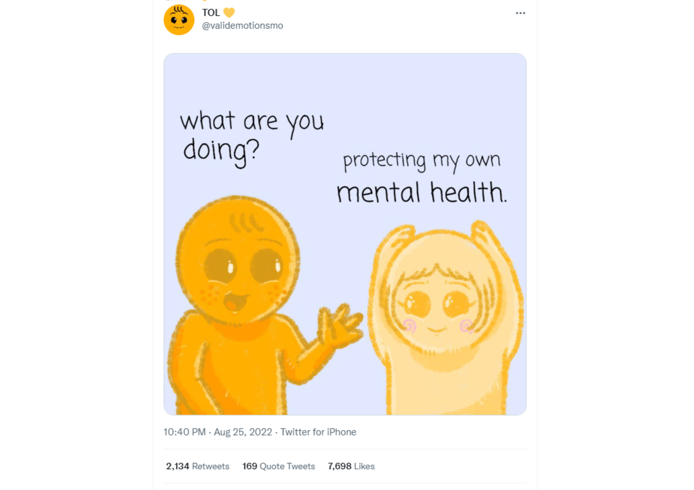
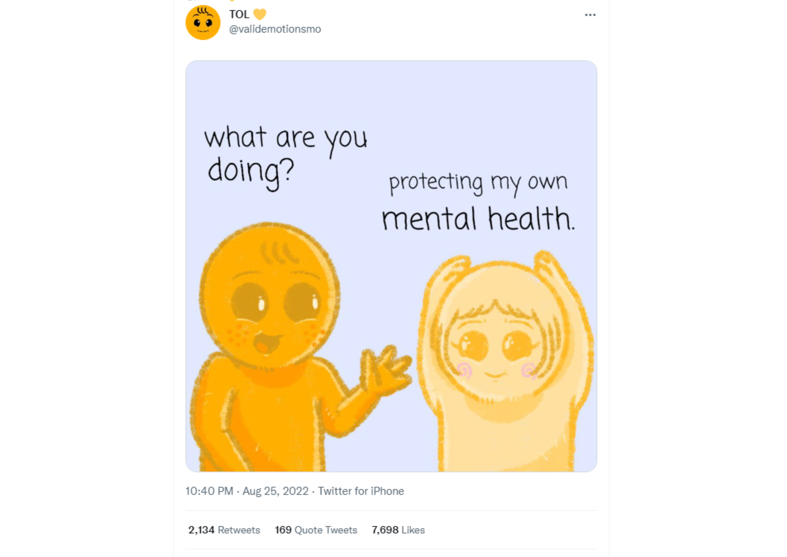

In this page, I'll share with you some personal experiences I had for the past 2 years of online learning that affected my mental health. Feel free to react and see if we have similar encounters! ^^
In my case, I think there were instances where I had a hard time in this mode of learning because of the thought "I need to do good". Because of this, I pressured myself that eventually lead to stress and anxiety. I also experienced being drained to the point that I can't do my requirements, so they pile up, and then overdues were everywhere. Encounters like this happen, but this is not a reason for us to call ourselves "not good enough" because everyone have down days and all of us need rest. Remember that we can always try again, improve, and be better :>
Some time early this year, I was struggling with my studies but I saw a twitter post that motivated me and ever since then, is a reminder I don't forget. The tweet can be seen on the right. Also, below are 2 other tweets that can serve as reminders <3 
